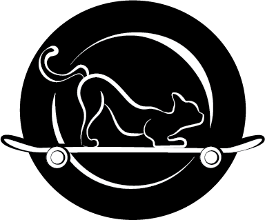
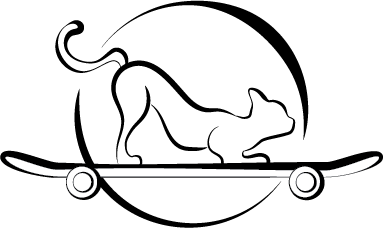
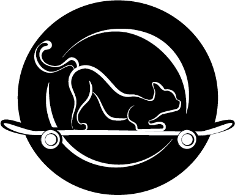
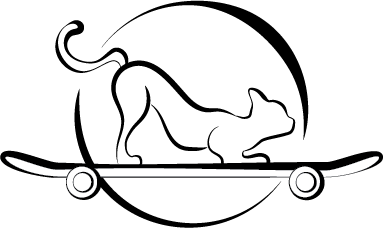

NineLives Logo
TThis is a Logo I created for a business concept named NineLives. The business is a skate boarding company with a love for feline friends so we placed one front and center having a blast riding its very own deck! I wanted to keep the logo simple yet interesting so I decided on a calligraphy style, making use of different stroke widths within the lines. In order to give our kitty some more emphasis I decided to add some circles in the background effectively mimicking the wheel of a board spinning behind the cat to tie into the business.